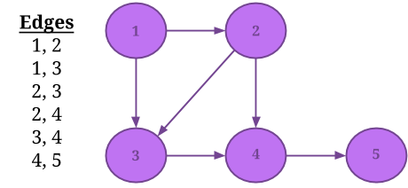
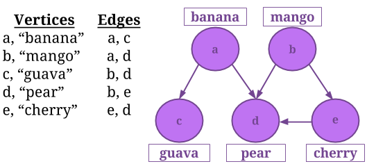
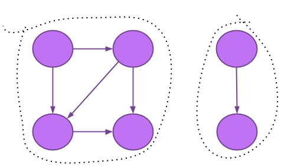

In this first tutorial, we are going to learn how to
In Gelly, vertices and edges are defined as Flink Tuples. Tuples are composite data types that contain a fixed number of fields. A Vertex is a Tuple2, where the first field corresponds to the Vertex ID and the second field corresponds to the Vertex value. An Edge is a Tuple3, where the first field is the ID of the source vertex, the second field is the ID of the target vertex and the third field is the edge value.
// create a vertex with ID=42 and value=0.8 Vertex<Integer, Double> v = new Vertex<Integer, Double>(42, 0.8); // create an edge from 5 to 6 with value="foo" Edge<Integer, Integer, String> e = new Edge<Integer, Integer, String>(5, 6, "foo");
To define vertices and edges without associated values, we use the NullValue type:
// create a vertex with ID=42 and no value Vertex<Integer, NullValue> v = new Vertex<Integer, NullValue>(42, NullValue.getInstance()); // create an edge from 5 to 6 with no value Edge<Integer, Integer, NullValue> e = new Edge<Integer, Integer, NullValue>(5, 6, NullValue.getInstance());
Graphs can be represented in many different ways: a list of edges, an adjacency list, an adjacency matrix, a list of vertices and a list of edges. In Gelly, Graphs are represented by a set of vertices and a set of edges. Internally, these sets are Flink DataSets. They might be distributed over several nodes in a cluster or they might never get materialized! You can create a Graph in Gelly by providing both the vertices and edges DataSets or just the edges, in case the vertices have no associated values.
 
Vertices and edges are usually given as plain text files or in the form of collections. Luckily, Flink comes with utilities for creating DataSets from many different data sources. You can find a complete reference in the Flink documentation. You can create Graphs from DataSets of Tuples, as well as from Vertex and Edge DataSets:ExecutionEnvironment env = ExecutionEnvironment.getExecutionEnvironment(); // create a Graph from Vertex and Edge DataSets DataSet<Vertex<String, Long>> vertices = ... DataSet<Edge<String, Double>> edges = ... Graph<String, Long, Double> g1 = Graph.fromDataSet(vertices, edges, env); // create a Graph from a Tuple3 DataSet DataSet<Edge<String, Double>> tupleEdges = ... Graph<String, NullValue, Double> g2 = Graph.fromTupleDataSet(tupleEdges, env);
As you probably noticed, Graph expects three types: the vertex ID type, the vertex value type and the edge value type.
Now that you have seen how to represent graphs in Gelly, it's time to analyze some real data! Go ahead and get the skeleton code of this tutorial from the github repository or copy and fill in the code snippets that we provide below.
% asym unweighted
% 834797 465017 465017
1 2
1 3
1 4
1 5
...
You can read this file using Flink’s readCsvFile() method. Flink’s CSV reader has convenient methods that lets us define the line delimiter and the field delimiter. In our case lines are separated by the new line character "\n" and fields by spaces. You can also ignore comments; lines that start with a certain character. Using this feature, we can instruct Flink to ignore the first 2 lines of the file. Finally, we have to define the field types. We will read the edge IDs as Longs. Since there are no edge values, we will use a simple mapper to set the third field of the edges to NullValue:
// Step #1: Load the data in a DataSet DataSet<Tuple3<Long, Long, NullValue>> twitterEdges = env.readCsvFile("/path/to/the/input/file") .fieldDelimiter("...") // node IDs are separated by spaces .ignoreComments("...") // comments start with "%" .types(...) // read the node IDs as Longs // set the edge value to NullValue with a mapper .map(new MapFunction<Tuple2<Long, Long>, Tuple3<Long, Long, NullValue>>() { @Override public Tuple3<Long, Long, NullValue> map(Tuple2<Long, Long> tuple) { return new Tuple3<Long, Long, NullValue>(...); } });
Now we are ready to create the Graph! When creating a graph from edges, Gelly allows us to initialize the vertices by defining a mapper. The mapper is given as a parameter to the graph creation metho and lets us map each vertex ID to an arbitrary value. Here, we will initialize each vertex with a value equal to its ID, i.e. vertex 1 will have value 1, vertex 2 will have value 2, vertex 42 will have value 42 and so on.
// Step #2: Create a Graph and initialize vertex values Graph<Long, Long, NullValue> graph = Graph.fromTupleDataSet(..., new InitVertices(), env);
/** * Initializes the vertex values with the vertex ID */ public static final class InitVertices implements MapFunction<Long, Long> { @Override public Long map(Long vertexId) { return vertexId; } }
Connectivity is one of the very basic and highly useful concepts in graph theory. It is a measure of robustness and can give us information on existing paths between nodes. A directed graph is called weakly connected if replacing all of its directed edges with undirected edges produces a connected (undirected) graph. In other words, all nodes can be reached from all other nodes in the network, following undirected edges. Groups of nodes in a graph that can be reached from each other following undirected edges are called Connected Components. Thus, a graph with a single connected component is weakly connected.
The following image shows a graph with two components:

Gelly provides a collection of graph algorithms for easily analyzing graphs. These algorithms are available as library methods and can be used by simply calling the run() method on the input graph. Computing connected components is one of them. In this algorithm, initially, each vertex belongs to its own component (its ID). The algorithm proceeds in iterations, where vertices exchange component IDs with their neighbors, until all vertices that belong to the same component have adopted the same ID. We will leave the details on how iterations work in Gelly for Tutorial#7. For now, all you need to know is that calling ConnectedComponents() on your graph will return a DataSet of vertices, where the vertex values correspond to the component ID. The library method takes only one parameter, the maximum number of iterations. You can set this to 10 for the given dataset.
// Step #3: Run Connected Components DataSet<Vertex<Long, Long>> verticesWithComponents = graph.run(new ConnectedComponents(...)).getVertices();
If you've made it so far and you've filled in the gaps, you can print and inspect the results. You should see that all vertices have been assigned the component ID 1, which means that the given Twitter graph is indeed weakly connected!
In the next tutorial, we are going to see how to retrieve vertices and edges from a graph and how to compute metrics and statistucs. Until then, you might want to play around with the rest of Gelly's library methods and compute PageRank or discover communities in your graph!